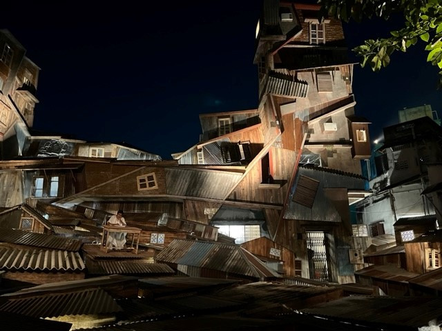

Review:

Durga Puja in Kolkata is a grand and vibrant celebration, known for its elaborate pandals and unique themes. In 2023, some of the notable themes include replicas of the Kailasa Temple from Maharashtra and the Burj Khalifa. The city is famous for hosting around 250 Kali Pujas, with nearly 20 being big-budget events.